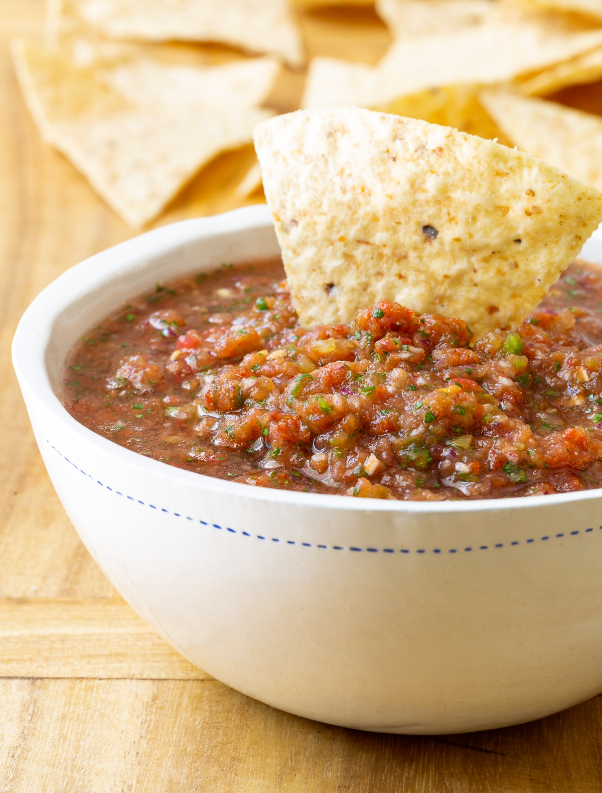

Homemade Salsa

Description
A simple and fantastic salsa. There are two variations of this salsa, one mild for anyone to enjoy and a hot version for those who like more spice.
Ingredients
1 can of zesty diced tomatoes
1 whole chopped garlic bulb
1 tablespoon of chili powder
1-2 pinches of salt to taste
Hot variation will also need
exta 1/2 tablespoon of cumin
extra 1/2 tablespoon of chili powder
Steps
Throw all the ingredients into blender and blend together until desired consistency (ex. chunky or more fine)
Store in jars, good in fridge for 7 days. For the adventurous, canning is possible, but please do your research on how to properly can.
Return to home page